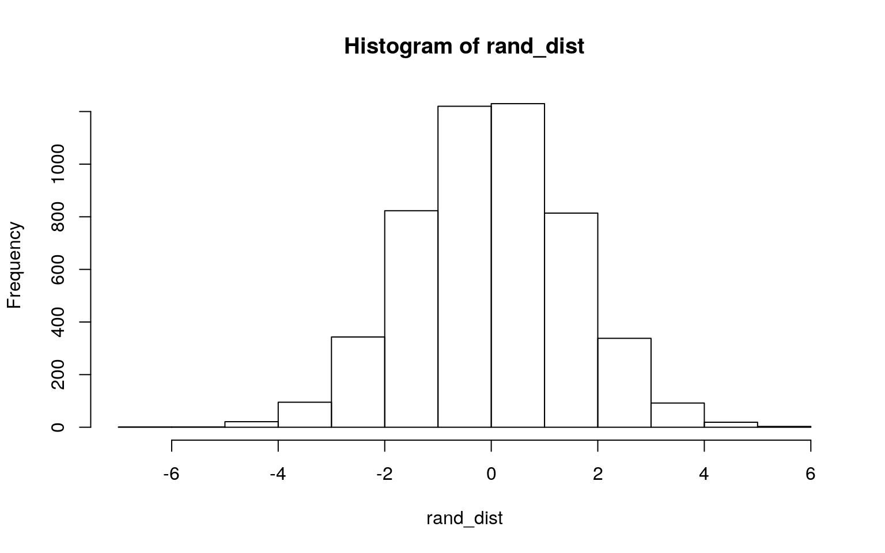
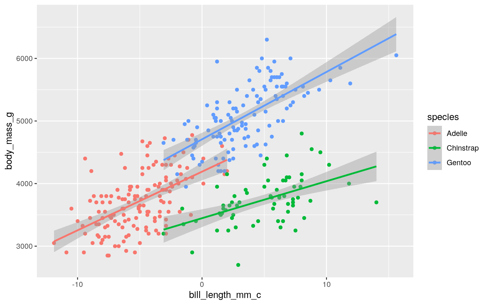
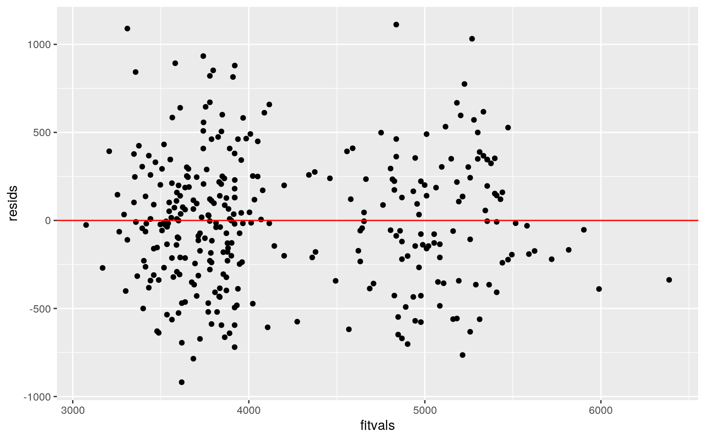
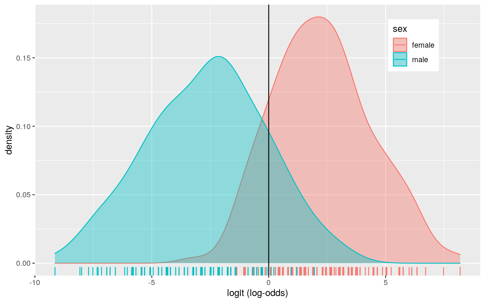
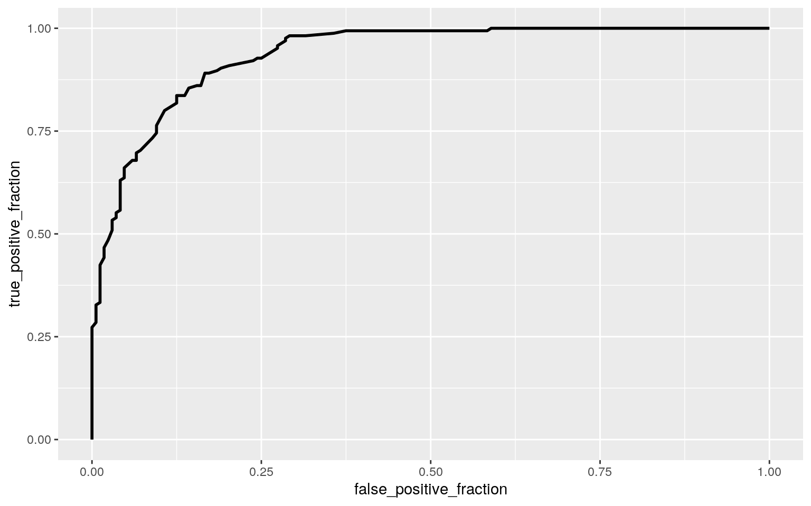

I am using the penguins dataset, found on the tidytuesday site. The data was collected by Dr. Kristen Gorman and the Palmer Station, Antarctica LTER. The package that was created for this data is the palmerpenguins package and it contains two datasets, penguins and penguins_raw. The penguins dataset contains 344 observations and 8 variables. The variables it contains are species, island, bill_length_mm, bill_depth_mm, flipper_length_mm, body_mass_g, sex, and year. There are 3 penguin species that were observed, Adelie, Gentoo, and Chinstrap. The 3 islands that were recorded were Biscoe, Dream, and Torgersen. The bill length, bill depth, and flipper length were all measured in millimeters. The body mass was measured in grams. The palmerpenguins package's goal is to provide a great dataset for data exploration and visualization. It is an alternative to iris.
penguins<- readr::read_csv('https://raw.githubusercontent.com/rfordatascience/tidytuesday/master/data/2020/2020-07-28/penguins.csv')
penguins <- penguins %>% na.omit()
penguins %>% group_by(species, island) %>% summarize(count=n())## # A tibble: 5 x 3
## # Groups: species [3]
## species island count
## <chr> <chr> <int>
## 1 Adelie Biscoe 44
## 2 Adelie Dream 55
## 3 Adelie Torgersen 47
## 4 Chinstrap Dream 68
## 5 Gentoo Biscoe 119I wanted to omit all the NA's, this leaves 333 observations. I also wanted to see the distribution of the different species on the varying islands.
#MANOVA
man1<-manova(cbind(bill_length_mm,bill_depth_mm,
flipper_length_mm, body_mass_g)~species, data=penguins)
summary(man1)## Df Pillai approx F num Df den Df Pr(>F)
## species 2 1.6379 370.89 8 656 < 2.2e-16 ***
## Residuals 330
## ---
## Signif. codes: 0 '***' 0.001 '**' 0.01 '*' 0.05 '.' 0.1
' ' 1#ANOVA
summary.aov(man1)## Response bill_length_mm :
## Df Sum Sq Mean Sq F value Pr(>F)
## species 2 7015.4 3507.7 397.3 < 2.2e-16 ***
## Residuals 330 2913.5 8.8
## ---
## Signif. codes: 0 '***' 0.001 '**' 0.01 '*' 0.05 '.' 0.1
' ' 1
##
## Response bill_depth_mm :
## Df Sum Sq Mean Sq F value Pr(>F)
## species 2 870.79 435.39 344.83 < 2.2e-16 ***
## Residuals 330 416.67 1.26
## ---
## Signif. codes: 0 '***' 0.001 '**' 0.01 '*' 0.05 '.' 0.1
' ' 1
##
## Response flipper_length_mm :
## Df Sum Sq Mean Sq F value Pr(>F)
## species 2 50526 25262.9 567.41 < 2.2e-16 ***
## Residuals 330 14693 44.5
## ---
## Signif. codes: 0 '***' 0.001 '**' 0.01 '*' 0.05 '.' 0.1
' ' 1
##
## Response body_mass_g :
## Df Sum Sq Mean Sq F value Pr(>F)
## species 2 145190219 72595110 341.89 < 2.2e-16 ***
## Residuals 330 70069447 212332
## ---
## Signif. codes: 0 '***' 0.001 '**' 0.01 '*' 0.05 '.' 0.1
' ' 1#Mean Differences
penguins%>%group_by(species)%>%summarize(mean(bill_length_mm),
mean(bill_depth_mm),
mean(flipper_length_mm),
mean(body_mass_g))## # A tibble: 3 x 5
## species `mean(bill_length_mm)` `mean(bill_depth_mm)`
`mean(flipper_length_mm… `mean(body_mass_g…
## <chr> <dbl> <dbl> <dbl> <dbl>
## 1 Adelie 38.8 18.3 190. 3706.
## 2 Chinstrap 48.8 18.4 196. 3733.
## 3 Gentoo 47.6 15.0 217. 5092.#Post-Hoc T Tests
pairwise.t.test(penguins$bill_length_mm,penguins$species, p.adj="none")##
## Pairwise comparisons using t tests with pooled SD
##
## data: penguins$bill_length_mm and penguins$species
##
## Adelie Chinstrap
## Chinstrap <2e-16 -
## Gentoo <2e-16 0.0054
##
## P value adjustment method: nonepairwise.t.test(penguins$bill_depth_mm,penguins$species, p.adj="none")##
## Pairwise comparisons using t tests with pooled SD
##
## data: penguins$bill_depth_mm and penguins$species
##
## Adelie Chinstrap
## Chinstrap 0.66 -
## Gentoo <2e-16 <2e-16
##
## P value adjustment method: nonepairwise.t.test(penguins$flipper_length_mm,penguins$species, p.adj="none")##
## Pairwise comparisons using t tests with pooled SD
##
## data: penguins$flipper_length_mm and penguins$species
##
## Adelie Chinstrap
## Chinstrap 1.3e-08 -
## Gentoo < 2e-16 < 2e-16
##
## P value adjustment method: nonepairwise.t.test(penguins$body_mass_g,penguins$species, p.adj="none")##
## Pairwise comparisons using t tests with pooled SD
##
## data: penguins$body_mass_g and penguins$species
##
## Adelie Chinstrap
## Chinstrap 0.69 -
## Gentoo <2e-16 <2e-16
##
## P value adjustment method: none#Probability of Type I Error
1-.95^17## [1] 0.5818797.05/17## [1] 0.002941176#MANOVA Assumptions
library(rstatix)
group <- penguins$species
DVs <- penguins %>% select(bill_length_mm,bill_depth_mm,flipper_length_mm,
body_mass_g)
sapply(split(DVs,group), mshapiro_test)## Adelie Chinstrap Gentoo
## statistic 0.9807567 0.867902 0.9756563
## p.value 0.03816471 3.417835e-06 0.02935132I performed the MANOVA to test whether any of the numeric variables show a mean difference across the three penguin species. The MANOVA test was significant meaning that for at least one dependent variable, at least one species' mean is different. Since the MANOVA test was significant I ran univariate ANOVAs to see which variables were significant. The numeric variables (bill_length_mm, bill_depth_mm, flipper_length_mm, body_mass_g) were significant, at least one species differs for each dependent variable.
I performed 1 MANOVA test, 4 ANOVAs, and 12 t-tests. A total of 17 tests were performed. The probability of at least one type I error is 0.582. The Bonferroni correction is 0.0029. Using the Bonferroni correction, bill_length significantly differed between Adeline and Chinstrap, and between Adelie and Gentoo. The bill_depth significantly differed between Adelie and Gentoo, and Chinstrap and Gentoo. All three species were found to differ significantly for flipper_length. Adelie and Gentoo, and Chinstrap and Gentoo were found to differ significantly in terms of body_mass. There are many MANOVA assumptions. Some assumptions include having random samples, independent observations, multivariate normality of dependent variables, homogeneity of within-group covariance matrices, and linear relationships among dependent variables. I tested the multivariate normality for each group and they all had p-values less than 0.5. This means that the assumption was violated.
penguins%>% group_by(sex)%>% summarize(means=mean(flipper_length_mm)) %>%
summarize(`mean_diff`=diff(means))## # A tibble: 1 x 1
## mean_diff
## <dbl>
## 1 7.14set.seed(348)
rand_dist<-vector()
for(i in 1:5000){
new<-data.frame(flipper_length_mm=sample(penguins$flipper_length_mm),sex=penguins$sex)
rand_dist[i]<-mean(new[new$sex=="male",]$flipper_length_mm)-
mean(new[new$sex=="female",]$flipper_length_mm)}
hist(rand_dist)
mean(rand_dist>7.142316 | rand_dist < -7.142316 ) ## [1] 0t.test(data=penguins,flipper_length_mm~sex) ##
## Welch Two Sample t-test
##
## data: flipper_length_mm by sex
## t = -4.8079, df = 325.28, p-value = 2.336e-06
## alternative hypothesis: true difference in means is not
equal to 0
## 95 percent confidence interval:
## -10.064811 -4.219821
## sample estimates:
## mean in group female mean in group male
## 197.3636 204.5060I decided to compute a mean difference test statistic because I am looking at a categorical variable, sex, and a numeric variable, flipper_length_mm. The null hypothesis is that the mean flipper length is the same between female and male penguins. The alternative hypothesis is that the mean flipper length is different for female and male penguins. I computed the p-value for the randomization test and I got 0. I conducted a t-test to compare the results and to see if the value of 0 was correct. The conclusion is that the null hypothesis can be rejected. The p-value is very small, less than 0.05. This means that the mean flipper length is different between female and male penguins.
#Mean-Center Variable
penguins$bill_length_mm_c <- penguins$bill_length_mm -
mean(penguins$bill_length_mm)
#Linear Regression Model
fit<- lm(body_mass_g~species*bill_length_mm_c, data = penguins)
summary(fit)##
## Call:
## lm(formula = body_mass_g ~ species * bill_length_mm_c,
data = penguins)
##
## Residuals:
## Min 1Q Median 3Q Max
## -918.76 -238.29 -8.65 234.69 1112.47
##
## Coefficients:
## Estimate Std. Error t value Pr(>|t|)
## (Intercept) 4190.74 67.40 62.179 < 2e-16 ***
## speciesChinstrap -743.84 104.48 -7.120 6.91e-12 ***
## speciesGentoo 516.85 85.19 6.067 3.61e-09 ***
## bill_length_mm_c 93.75 11.60 8.082 1.25e-14 ***
## speciesChinstrap:bill_length_mm_c -34.63 17.88 -1.937
0.0536 .
## speciesGentoo:bill_length_mm_c 13.89 16.00 0.868 0.3859
## ---
## Signif. codes: 0 '***' 0.001 '**' 0.01 '*' 0.05 '.' 0.1
' ' 1
##
## Residual standard error: 371.9 on 327 degrees of freedom
## Multiple R-squared: 0.7899, Adjusted R-squared: 0.7867
## F-statistic: 245.8 on 5 and 327 DF, p-value: < 2.2e-16#Regression Plot
penguins %>% ggplot(aes(bill_length_mm_c,body_mass_g, color = species))+
geom_point()+
geom_smooth(method = "lm") 
#Assumptions Tests
resids<- fit$residuals
fitvals<-fit$fitted.values
ggplot()+geom_point(aes(fitvals,resids))+geom_hline(yintercept=0, color='red')
shapiro.test(resids)##
## Shapiro-Wilk normality test
##
## data: resids
## W = 0.99279, p-value = 0.1092library(sandwich); library(lmtest)
bptest(fit) ##
## studentized Breusch-Pagan test
##
## data: fit
## BP = 4.0719, df = 5, p-value = 0.5391#Robust Standard Errors
coeftest(fit, vcov = vcovHC(fit))#corrected##
## t test of coefficients:
##
## Estimate Std. Error t value Pr(>|t|)
## (Intercept) 4190.737 66.265 63.2425 < 2.2e-16 ***
## speciesChinstrap -743.839 92.231 -8.0649 1.401e-14 ***
## speciesGentoo 516.850 83.137 6.2168 1.546e-09 ***
## bill_length_mm_c 93.749 11.221 8.3545 1.897e-15 ***
## speciesChinstrap:bill_length_mm_c -34.631 17.275 -2.0047
0.04581 *
## speciesGentoo:bill_length_mm_c 13.893 14.933 0.9304
0.35286
## ---
## Signif. codes: 0 '***' 0.001 '**' 0.01 '*' 0.05 '.' 0.1
' ' 1summary(fit)$coef #uncorrected## Estimate Std. Error t value Pr(>|t|)
## (Intercept) 4190.73677 67.39815 62.1788087 3.192544e-183
## speciesChinstrap -743.83929 104.47904 -7.1195071
6.913719e-12
## speciesGentoo 516.84959 85.19410 6.0667301 3.608059e-09
## bill_length_mm_c 93.74913 11.60012 8.0817388
1.249136e-14
## speciesChinstrap:bill_length_mm_c -34.63140 17.88058
-1.9368160 5.362902e-02
## speciesGentoo:bill_length_mm_c 13.89313 16.00205
0.8682095 3.859164e-01The intercept, 4190.74, is the mean/predicted body mass for Adelie penguins with average bill lengths. Chinstrap penguins with average bill length have a predicted body mass that is 743.84 mm less than Adelie penguins with average bill length. Gentoo penguins with average bill length have a predicted body mass that is 516.85 mm greater than Adelie penguins with average bill length. The bill length coefficient shows that for every 1-unit increase in bill length, the predicted body mass goes up 93.75 mm for Adelie penguins. The slope of bill length on body mass for Chinstrap penguins is 34.63 less than for Adeline penguins. The slope of bill length on body mass for Gentoo penguins is 13.49 greater than for Adelie penguins. I plotted the fitted values and residuals to check on the assumption of linearity. I conducted a Shapiro-Wilk test to test for normality. It failed to reject the null hypothesis, the true distribution is normal. I conducted a Breusch-Pagan test to formally assess homoskedasticity. It failed to reject the null hypothesis. The data is homoskedastic. The robust SEs are slightly less than the uncorrected SEs.This means the p-value would also decrease and the t-statistics would increase. R^2, 0.7899, is the proportion of variation in the response variable explained by the overall model. The adjusted R^2, 0.7867, accounts for the penalty for each extra explanatory variable.
samp_distn<-replicate(5000, {
boot_dat <- sample_frac(penguins, replace=T)
fit2 <- lm(body_mass_g~species*bill_length_mm_c, data = boot_dat)
coef(fit2)
})
samp_distn %>% t %>% as.data.frame %>% summarize_all(sd)## (Intercept) speciesChinstrap speciesGentoo
bill_length_mm_c speciesChinstrap:bill_length_mm_c
## 1 66.10392 90.00755 82.55408 11.12324 16.80476
## speciesGentoo:bill_length_mm_c
## 1 14.89903Compared to the original SEs, the bootstrapped SEs are smaller. Since the SEs went down, the p-value goes down too. Compared to the robust SEs, the bootstrapped SEs are slightly smaller.
#Binary Variable
penguins%>%mutate(y=ifelse(sex=="female",1,0)) ->penguins1
#Logistic Regression
fit3<-glm(y~species+body_mass_g,data=penguins1,family="binomial")
summary(fit3)##
## Call:
## glm(formula = y ~ species + body_mass_g, family =
"binomial",
## data = penguins1)
##
## Deviance Residuals:
## Min 1Q Median 3Q Max
## -2.62984 -0.40255 -0.02497 0.43951 2.54916
##
## Coefficients:
## Estimate Std. Error z value Pr(>|z|)
## (Intercept) 27.1318593 2.9983552 9.049 <2e-16 ***
## speciesChinstrap 0.2559251 0.4293119 0.596 0.551
## speciesGentoo 10.1778083 1.1945920 8.520 <2e-16 ***
## body_mass_g -0.0073728 0.0008141 -9.056 <2e-16 ***
## ---
## Signif. codes: 0 '***' 0.001 '**' 0.01 '*' 0.05 '.' 0.1
' ' 1
##
## (Dispersion parameter for binomial family taken to be 1)
##
## Null deviance: 461.61 on 332 degrees of freedom
## Residual deviance: 212.09 on 329 degrees of freedom
## AIC: 220.09
##
## Number of Fisher Scoring iterations: 6exp(coef(fit3))## (Intercept) speciesChinstrap speciesGentoo body_mass_g
## 6.070392e+11 1.291656e+00 2.631273e+04 9.926543e-01prob <- predict(fit3, type="response")
pred<- ifelse(prob>.5,1,0)
#Confusion Matrix
table(prediction=pred,truth=penguins1$y)%>%addmargins## truth
## prediction 0 1 Sum
## 0 142 23 165
## 1 26 142 168
## Sum 168 165 333class_diag<-function(probs,truth){
tab<-table(factor(probs>.5,levels=c("FALSE","TRUE")),truth)
acc=sum(diag(tab))/sum(tab)
sens=tab[2,2]/colSums(tab)[2]
spec=tab[1,1]/colSums(tab)[1]
ppv=tab[2,2]/rowSums(tab)[2]
if(is.numeric(truth)==FALSE & is.logical(truth)==FALSE) truth<-as.numeric(truth)-1
#CALCULATE EXACT AUC
ord<-order(probs, decreasing=TRUE)
probs <- probs[ord]; truth <- truth[ord]
TPR=cumsum(truth)/max(1,sum(truth))
FPR=cumsum(!truth)/max(1,sum(!truth))
dup<-c(probs[-1]>=probs[-length(probs)], FALSE)
TPR<-c(0,TPR[!dup],1); FPR<-c(0,FPR[!dup],1)
n <- length(TPR)
auc<- sum( ((TPR[-1]+TPR[-n])/2) * (FPR[-1]-FPR[-n]) )
data.frame(acc,sens,spec,ppv,auc)
}
#Accuracy, TPR, TNR, PPV, AUC
class_diag(prob, penguins1$y)## acc sens spec ppv auc
## 1 0.8528529 0.8606061 0.8452381 0.8452381 0.9362374#Density Plot
penguins1$logit<-predict(fit3,type="link")
penguins1%>%ggplot()+geom_density(aes(logit,color=sex,fill=sex), alpha=.4)+
theme(legend.position=c(.85,.85))+geom_vline(xintercept=0)+xlab("logit (log-odds)")+
geom_rug(aes(logit,color=sex))
#ROC curve
library(plotROC)
ROCplot<-ggplot(penguins1)+geom_roc(aes(d=y,m=prob), n.cuts=0)
ROCplot
#AUC
calc_auc(ROCplot)## PANEL group AUC
## 1 1 -1 0.9362374Controlling for body mass, Gentoo and Adelie penguins are significantly different. Controlling for body mass, Chinstrap and Adelie penguins are not significantly different. Controlling for species, body mass has a significant negative impact on the odds of being female. The odds of being female for Gentoo penguins are 2.631x10^4 times that of Adelie penguins. Controlling for penguin species, for every 1-unit increase in body mass, odds of being female change by a factor of 0.9927. The confusion matrix is computed and allows us to be able to calculate the accuracy, sensitivity, specificity, and precision. I used the function class_diag to compute the values. The accuracy is 0.853, sensitivity is 0.861, specificity is 0.845, and precision is 0.845. The AUC is 0.936 which means it is great.
penguins2 <- penguins1 %>% select(-bill_length_mm_c,-logit,-sex)
#Logistic Regression
fit4 <- glm(y~., data=penguins2, family="binomial")
summary(fit4)##
## Call:
## glm(formula = y ~ ., family = "binomial", data =
penguins2)
##
## Deviance Residuals:
## Min 1Q Median 3Q Max
## -2.7493 -0.1386 -0.0025 0.2008 3.3249
##
## Coefficients:
## Estimate Std. Error z value Pr(>|z|)
## (Intercept) -3.106e+02 6.321e+02 -0.491 0.62321
## speciesChinstrap 7.625e+00 1.715e+00 4.447 8.70e-06 ***
## speciesGentoo 8.766e+00 2.679e+00 3.272 0.00107 **
## islandDream -3.943e-01 8.179e-01 -0.482 0.62972
## islandTorgersen 5.131e-01 8.492e-01 0.604 0.54571
## bill_length_mm -6.270e-01 1.347e-01 -4.655 3.25e-06 ***
## bill_depth_mm -1.613e+00 3.385e-01 -4.766 1.88e-06 ***
## flipper_length_mm -3.768e-02 5.155e-02 -0.731 0.46476
## body_mass_g -5.717e-03 1.090e-03 -5.244 1.58e-07 ***
## year 1.955e-01 3.163e-01 0.618 0.53648
## ---
## Signif. codes: 0 '***' 0.001 '**' 0.01 '*' 0.05 '.' 0.1
' ' 1
##
## (Dispersion parameter for binomial family taken to be 1)
##
## Null deviance: 461.61 on 332 degrees of freedom
## Residual deviance: 125.66 on 323 degrees of freedom
## AIC: 145.66
##
## Number of Fisher Scoring iterations: 7#Classification Disgnostics
prob1 <- predict(fit4, type="response")
class_diag(prob1, penguins2$y)## acc sens spec ppv auc
## 1 0.9219219 0.9272727 0.9166667 0.9161677 0.9779582#10-Fold CV
set.seed(1234)
k=10
data1<-penguins2[sample(nrow(penguins2)),]
folds<-cut(seq(1:nrow(penguins2)),breaks=k,labels=F)
diags<-NULL
for(i in 1:k){
train<-data1[folds!=i,]
test<-data1[folds==i,]
truth<-test$y
fit5<- glm(y~., data=train, family = "binomial")
probs1<- predict(fit5, newdata=test, type="response")
diags<-rbind(diags,class_diag(probs1,truth))
}
summarize_all(diags,mean)## acc sens spec ppv auc
## 1 0.912656 0.9248516 0.9019857 0.905684 0.9690102#LASSO
library(glmnet)
set.seed(1234)
y<-as.matrix(penguins2$y)
penguins_preds<-model.matrix(y~.,data=penguins2)[,-1]
cv<-cv.glmnet(penguins_preds,y,family="binomial")
lasso_fit<-glmnet(penguins_preds,y,family="binomial",lambda=cv$lambda.1se)
coef(lasso_fit)## 10 x 1 sparse Matrix of class "dgCMatrix"
## s0
## (Intercept) 46.119264075
## speciesChinstrap 1.541721565
## speciesGentoo .
## islandDream .
## islandTorgersen .
## bill_length_mm -0.169979895
## bill_depth_mm -1.530929686
## flipper_length_mm .
## body_mass_g -0.003038786
## year .#10-Fold CV With Selected Variables
penguins2%>%mutate(Species.Chinstrap=ifelse(species=="Chinstrap",1,0)) ->penguins3
set.seed(1234)
k=10
data1<-penguins3[sample(nrow(penguins3)),]
folds<-cut(seq(1:nrow(penguins3)),breaks=k,labels=F)
diags<-NULL
for(i in 1:k){
train<-data1[folds!=i,]
test<-data1[folds==i,]
truth<-test$y
fit6<- glm(y~bill_length_mm+bill_depth_mm+body_mass_g+Species.Chinstrap, data=train,
family= "binomial")
probs2<- predict(fit6, newdata=test, type="response")
diags<-rbind(diags,class_diag(probs2,truth))
}
summarize_all(diags,mean)## acc sens spec ppv auc
## 1 0.8947415 0.881901 0.906099 0.9104151 0.9669452For the in-sample classification diagnostics, the accuracy is 0.922, sensitivity is 0.927, specificity is 0.917, and precision is 0.916. The AUC is 0.978 which means it is great. These values differ for the 10-fold CV, all the values decreased slightly. The accuracy for the 10-fold CV is 0.913, sensitivity is 0.925, specificity is 0.902, and precision is 0.906. The AUC also decreased slightly to 0.969 which is still considered great. The values that were retained from LASSO were for the Chinstrap penguins, bill_length_mm, bill_depth_mm, and body_mass_g. Performing the 10-fold CV only using the variables lasso selected leads to an AUC slightly lower than the 10-fold CV with all the variables. It is also smaller than the in-sample classification diagnostics AUC. The AUC decreased to 0.967 which is still considered great. The accuracy is 0.895, sensitivity is 0.882, specificity is 0.906, and precision is 0.910.